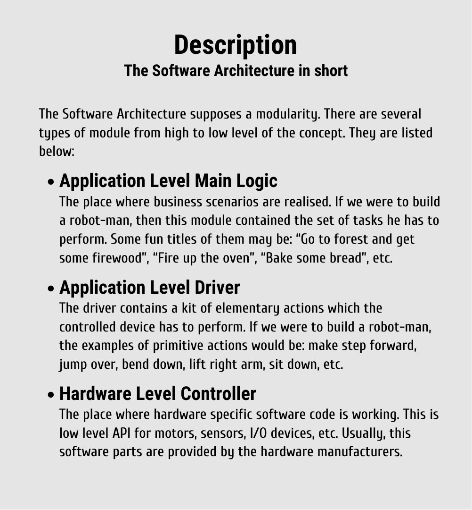
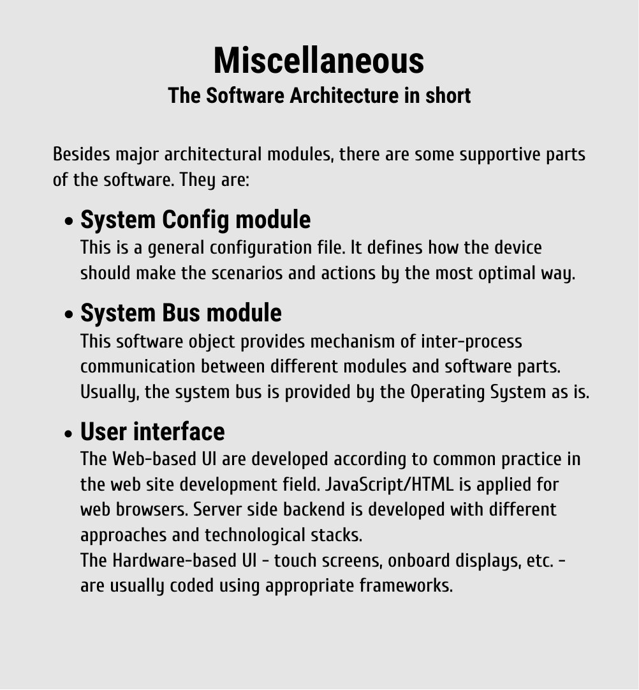

2021–2022 · Phoenix Baseball Systems (США)
Симулятор подач FireBall: архитектура системы управления
FireBall — пневматический симулятор бейсбольных подач, который воспроизводит реальные подачи питчеров MLB синхронно с видео питчера. По договору я проектировал его встраиваемую систему управления и начал её реализацию.


Задача
Шесть сервоосей (тангаж, крен, рыскание, Z и два мотора закрутки до 3200 об/мин), 13 дискретных выходов (электроклапаны, лазер, индикаторы, сирена), аналоговые датчики (наклон, давление, наличие мяча), синхронное воспроизведение видео, RESTful API и беспроводной веб-интерфейс с ролями — всё на одноплатном компьютере NXP i.MX8M (Nitrogen8M).
Предложенная архитектура




Скачать документ целиком (PDF, англ.)
Сценарии подач — правила на Lua; элементарные действия машины — прикладные драйверы на C; ниже — API производителей оборудования; всё связано системной шиной. Та же многоуровневая схема позже ушла в серийную прошивку роутеров.
Что я сделал
- Проанализировал требования заказчика и предложил многоуровневую архитектуру, показанную выше.
- Перенёс ubus и UCI из OpenWrt на Ubuntu (целевая ОС — Ubuntu Core), чтобы контроллер использовал те же инструменты, что и устройства на OpenWrt.
- Написал первую часть движка правил на C: модель данных (модули, правила, переменные с источниками UCI / ubus / константа, типизированные значения), кэш значений на цикл и цикл вычисления на uloop.
- Вёл переговоры на английском и подготовил договор с четырьмя дополнениями: поэтапная сдача MVP (планирование, оценка, исследование, разработка, демонстрация с исходным кодом), график оплаты, разделение рисков по оборудованию и срокам.
- Определил состав MVP-1: стенд с сервомоторами, модулем ввода-вывода, реле и датчиком наклона.
В начале 2022 года проект был приостановлен: комплект оборудования не удалось отправить в Россию.